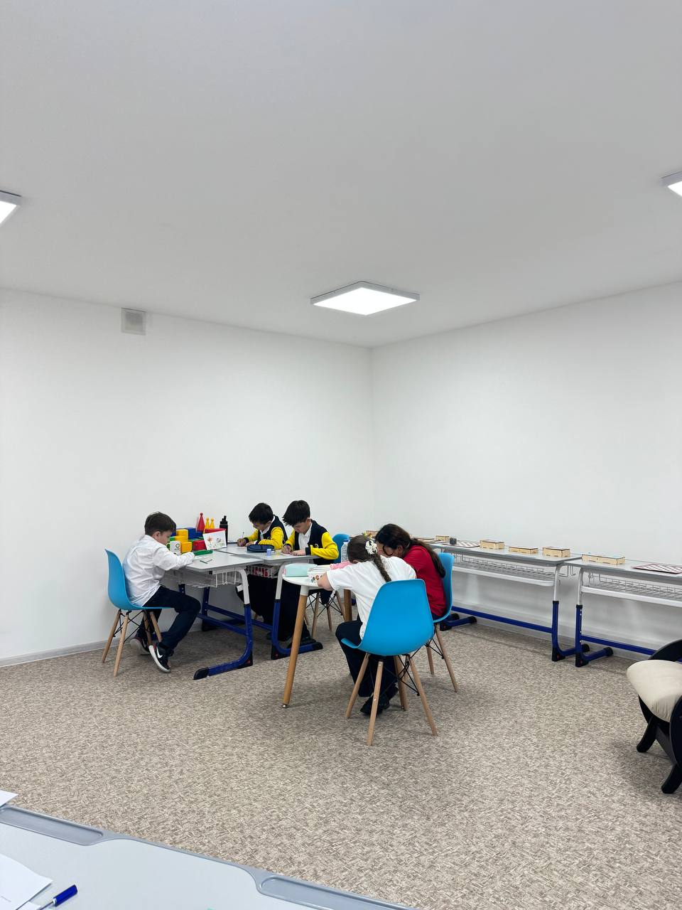
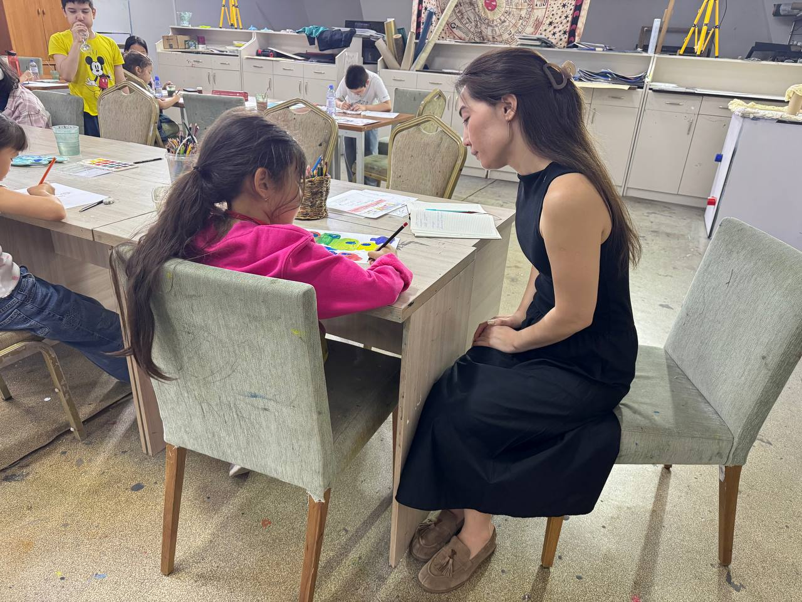
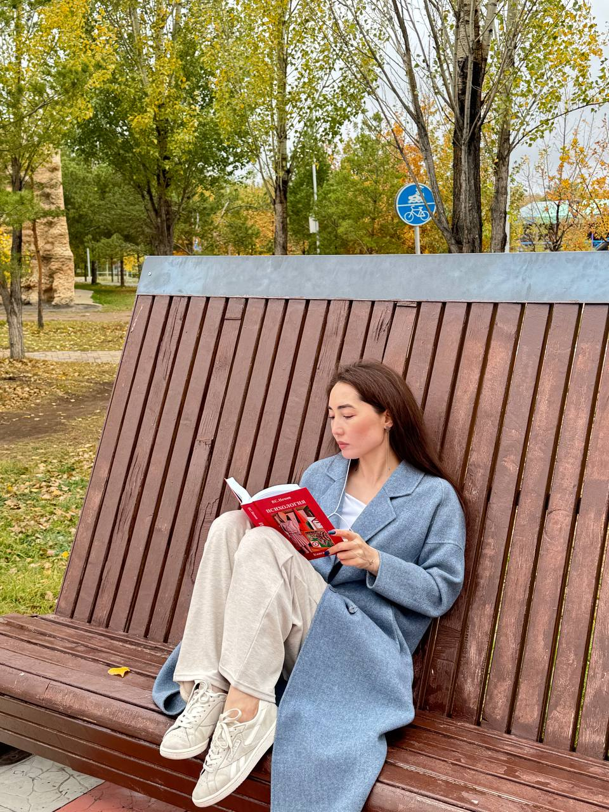

Бакалавр педагогики и психологии
Костанайский региональный университет имени Ахмета Байтурсынулы.
Психолог • Арт-терапевт
Алия Жакупова помогает людям лучше понимать свои чувства, снижать внутреннее напряжение, строить более безопасные отношения с собой и окружающими и находить опору в творчестве.

Обо мне
Я — психолог и арт-терапевт, помогаю людям не просто «выдержать» стресс и внутреннее напряжение, а постепенно научиться понимать себя, замечать свои ресурсы и чувствовать больше ясности и спокойствия.
Моя работа строится на сочетании психологической поддержки, безопасной коммуникации и творческой практики. Для кого-то это становится способом снизить тревогу и усталость, для кого-то — возможностью лучше понимать себя, свои реакции и границы, а для команд — инструментом мягкой и продуктивной внутренней работы.
Работаю как с индивидуальными запросами, так и с группами, организациями и образовательными учреждениями, создавая атмосферу доверия, свободы выражения и понятной рефлексии.
Образование и опыт
Костанайский региональный университет имени Ахмета Байтурсынулы.
Курс по профилактике буллинга и суицидальных рисков в образовательной среде.
Углублённая работа с творческой диагностикой, эмоциональной регуляцией и групповыми практиками.
Психологическая поддержка, эмоциональная устойчивость, профилактика выгорания, работа с тревогой и стрессом, групповая коммуникация.
С чем я работаю

Что такое арт-терапия
Арт-терапия — это форма психологической поддержки, где творчество становится инструментом проживания чувств, осмысления переживаний и снижения внутреннего напряжения. В процессе работы человек может выражать то, что трудно сказать словами: тревогу, усталость, потребность, конфликт, внутреннюю усталость или ресурс.
Важно, что арт-терапия не обещает мгновенного результата и не заменяет специализированную медицинскую помощь. Она помогает замедлиться, почувствовать себя безопасно и увидеть свои мысли и чувства более ясно.
Как проходит встреча
Определяем запрос, контекст и цель встречи.
Создаём ощущение безопасности и ясности.
Творческая работа через рисунок, символы, визуализацию и материалы.
Осмысливаем смысл, эмоции и новые замечания.
Формулируем, что важно взять с собой после встречи.
Подводим итог и при необходимости определяем следующий шаг.
Услуги
Психологическая поддержка в диалоге, направленная на снижение тревоги, улучшение самопонимания и восстановление эмоционального равновесия.
Работа в малых группах для безопасного выражения чувств, осмысления внутренних процессов и укрепления ресурсного состояния.
Творческие практики, которые помогают раскрывать эмоции и снижать внутреннее напряжение через образ, материал и процесс.
Поддержка эмоциональной устойчивости и коммуникации в безопасной и понятной форме.
Психологически безопасные программы для детей, педагогов и школьного сообщества.
Мероприятия для команд и организаций по снижению эмоционального напряжения, укреплению доверия и здоровой коммуникации.
Для школ, компаний и организаций
Формат 90–120 минут помогает участникам замедлиться, снизить накопленное напряжение и почувствовать большую внутреннюю свободу. Такие встречи особенно актуальны для школ, компаний, HR-команд, университетов, НПО и профессиональных сообществ.
Галерея

Видео
Стоимость
20 000 ₸
до конца 2026 года специальная цена — 10 000 ₸
Я, Алия, помогаю людям справляться со стрессом, тревогой, внутренним напряжением и переутомлением через безопасную и поддерживающую психологическую работу.
Контакты
Для записи на индивидуальную встречу, групповую программу или корпоративное мероприятие заполните форму справа или напишите напрямую через удобный канал связи.